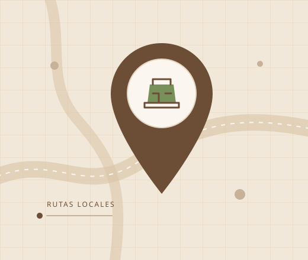

Tamalon
Bienvenido de vuelta
Qué gusto verte
Inicia sesión para continuar. El acceso desde esta página es para el panel administrativo.

Iniciar sesión
Ingresa tus datos para acceder a tu cuenta.
Recuperar contraseña
Escribe el correo asociado a tu cuenta. Si está registrado, recibirás instrucciones para restablecer tu contraseña.